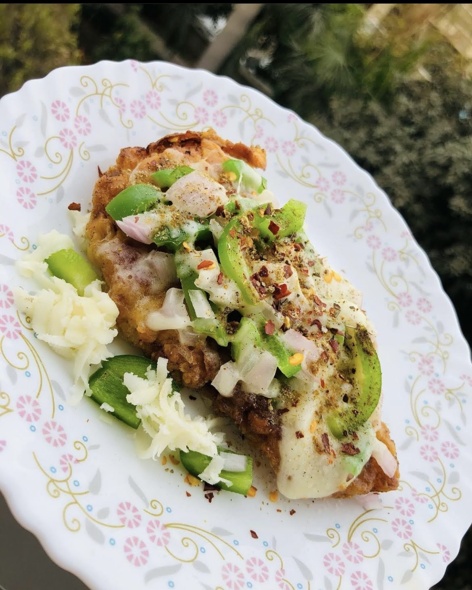

Chizza
Kfc At home
Ingredients-
All propose four ( half bowl)
Salt
Pepper
Chilli flakes
And any other flavor you like - ginger power and all
Mix all of these ingredients in all propose flour
Then beat 2 eggs in a separate plate
Place your thin chicken breast in beaten eggs
Then in the mixture of flour
Then again in egg
And in flour
And in a sauce pan
On high flame
Deep fry the beast
3-4 min each side
After deep frying put our vegetables like capsicum onions mushroom and top that with grated cheese and microwave for 1min.
|

BACK